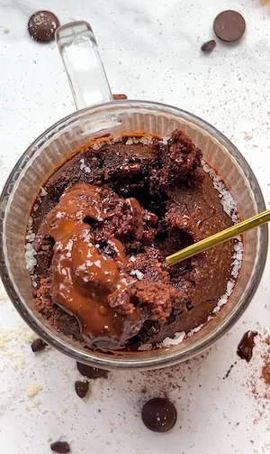

Triple Chocolate Mug Cake (single serve, gooey, and packed with 22g of protein)
triple chocolate. single serve. gooey in the middle and it has 22g of protein. if that's not enough of a pitch then i don't know what to tell you lol. this almond flour chocolate mug cake is what happens when a chocolate craving hits but you have little to no energy to fulfill it. it's fudgy, it's rich, it's got three kinds of chocolate going on, and it comes together in about five minutes of actual effort before the oven does the rest.
if you're wondering where the triple chocolate situation is coming from: the cocoa powder goes into the batter itself and gives the cake its deep chocolate base flavour. then the chocolate chips get folded in and melt slightly as the cake bakes, creating little pockets of melted chocolate in every bite. because sometimes that is just not enough, i also added a square of dark chocolate pushed into the centre before baking, which becomes a completely molten pool of chocolate hidden inside the cake. when you dig your spoon through the top and hit it for the first time, she is the moment. worth every minute of the bake time.
almond flour is the base of this recipe and the only flour used. it's what makes the texture so good. almond flour bakes into a more moist and dense texture than regular flour, which makes it feel extra indulgent. it doesn't go dry the way wheat flour can, and it gives the cake that fudgy vibe that is so satisfying to eat. nutritionally, almond flour is a brilliant swap from regular flour because it's high in vitamin E, a fat-soluble antioxidant that helps protect cells from oxidative stress, and it's a great source of healthy monounsaturated fats. it's also what contributes a significant chunk of the protein in this recipe, giving this triple chocolate mug cake a whopping 22g of protein without any protein powder.
i haven't tested this mug cake with any other flour and honestly i wouldn't recommend trying to swap it out. other flours absorb liquid differently, require different ratios, and would change the texture, bake time and macros significantly. almond flour is the one for the protein and texture goal. if you're calorie conscious, this one is probably not for you lol, although the rest of the macros help balance it out. almond flour is just simply more calorie dense but simultaneously very nutrient dense, which is exactly why i don't suggest looking at calories alone without the rest of the macros and full nutritional profile. this mug cake is listed as a single serve recipe, but you can also halve the quantities or get 2 servings out of it instead of 1 depending on your mood.
the cacao powder is pulling double duty here as both a flavour ingredient and a functional one. cacao is rich in flavonoids, particularly epicatechin, which has been studied for its effects on cardiovascular health and brain health. fun fact: it's involved in the growth of brain cells. it's also one of the better plant sources of magnesium, a mineral that supports sleep quality, muscle function and nervous system regulation. two tablespoons gives you a strong, proper chocolate flavour throughout the batter without making it bitter, plus a whole host of nutritional benefits.
almond flour is a great plant based protein source, and paired with the egg, they're responsible for the approx. 22g of protein in this single serve cake, which makes it a more balanced dessert than most. the egg also acts as the binder that holds the cake together and gives it structure as it bakes, which is particularly important with almond flour since it doesn't have the gluten network that regular flour relies on. without the egg this cake wouldn't hold together the way it does, and unfortunately it can't be omitted.
a little more nutrition science: the combination of almond flour, egg and cocoa makes this one of the more nutritionally interesting mug cakes out there. the healthy fats from the almond flour slow digestion and help keep you full after eating. the magnesium from the cocoa and the vitamin E from the almond flour are both involved in reducing oxidative stress and inflammation. and the protein from the egg and almond flour together means this dessert won't spike and crash your blood sugar the way a refined flour and sugar based mug cake would. it tastes like a deeply indulgent dessert because it is, but the ingredients are also very intentional.
for the method: mix the dry ingredients in your oven-safe mug first, then add the wet ingredients and mix until smooth. fold in the chocolate chips, then push the dark chocolate square into the centre of the batter until the batter covers it completely. if the chocolate is sitting on top rather than fully submerged, it won't melt into that hidden molten centre, it'll just melt on the surface, so be sure to push it down. bake at 170C (160C fan) for 15 to 20 minutes and check at the 15 minute mark. the top should look set but the centre will have a slight wobble from the melted chocolate inside.
let it cool almost completely before eating. i know that is a very big ask lol, but a) it's extremely hot straight out of the oven and you will burn your tongue, and b) almond flour can be quite mushy naturally and heat makes that worse, so letting it cool properly makes the taste and texture way richer and lighter.
if you're deep in a chocolate moment, you have to make my viral gluten free brownie cookies, they went viral for a reason, they are divine. or if you want a lighter, added sugar free chocolate option, my chocolate banana pancake bowl is the move. and if your chocolate craving is screaming at you and you need something pretty much immediately, my viral no bake 4 ingredient brownie batter bars are the cure.
Frequently Asked Questions
Can I use a different flour instead of almond flour?
I haven't tested this recipe with any other flour and I wouldn't recommend swapping it out without expecting significant changes. Different flours absorb liquid at very different rates, which means the ratios, texture and bake time would all need adjusting. Swapping almond flour for oat flour or a gluten free blend would also change the macros quite a lot, including the protein content, which is largely coming from the almond flour. If you need a nut-free version, that would require a properly tested reformulation rather than a straight swap.
Can I make this mug cake in the microwave instead of the oven?
The recipe is written for the oven and that's where it gives the best result, specifically that gooey, brownie-like texture and the properly melted chocolate centre. A microwave mug cake cooks from the inside out and tends to give a spongier, slightly rubbery texture rather than the fudgy result you get from the oven. If you do want to try the microwave, cook on medium power in 30-second bursts and check after each one, but the texture will be noticeably different to the oven version so I highly recommend the oven.
How do I know when this triple chocolate mug cake is done?
The top should look set and matte rather than wet or shiny. The edges may also have pulled away slightly from the sides of the mug. The very centre will still have a slight wobble because of the melted chocolate square inside, which is exactly right. If you're unsure, insert a toothpick into the side of the batter rather than the centre (the chocolate will always look underdone) and it should come out with just a few moist crumbs. Check at 15 minutes first and give it another 2 to 3 minutes only if the top still looks very wet.
Is this recipe gluten free?
Yes, almond flour is naturally gluten free and none of the other ingredients contain gluten. If you have coeliac disease or high sensitivity, double check the labels on your cocoa powder and chocolate chips as these can sometimes be processed in facilities that also handle gluten-containing products.
Is this triple chocolate mug cake dairy free?
Yes, as long as you use water or a plant-based milk rather than dairy milk, and make sure your chocolate chips and dark chocolate square are dairy free. Most 70% dark chocolate is naturally dairy free but always check the label. With those two things confirmed, the whole recipe is completely dairy free.
Can I reduce the maple syrup or make it less sweet?
Yes! The recipe gives a range of 1 to 2 tablespoons and 1 tablespoon is perfectly fine if you prefer things less sweet. The dark chocolate square and chocolate chips will add sweetness as they melt, so keep that in mind when deciding how much maple syrup to add. You can also omit it entirely if your chocolate chips are already quite sweet, though the batter will be noticeably less sweet without it.
What chocolate should I use for the centre and the chips?
Any dark chocolate you like works here. I'd suggest a 70% for a good balance of richness and sweetness, but 60% gives a slightly sweeter result and anything 85% and above is quite intense and bitter. Refined sugar free dark chocolate is what keeps this recipe in line with the other ingredients. For the chips, any refined sugar free dark chocolate chips work, or you can chop up a bar of dark chocolate into small pieces instead.
Why does this triple chocolate mug cake have so much protein?
The protein comes primarily from two ingredients: almond flour and the egg. Almond flour is naturally high in protein compared to most other flours, and 75g of it contributes a significant portion of the total. The egg adds another 6g on top of that. Together they bring the total to approximately 22g of protein per serving, which is more than most desserts and makes this a much more satiating option than a standard flour and sugar-based cake.
Pro Tips
- Push the dark chocolate square deep enough into the centre of the batter so that it's fully covered.
- Check at 15 minutes and resist the urge to go longer if the top looks set.
- Use a mug or oven safe ramekin that holds at least 350ml.
Triple Chocolate Mug Cake

Ingredients
Instructions
- Step 1: Preheat the oven to 170C / 160C fan.
- Step 2: In an oven-safe mug, add the almond flour, cocoa powder, baking powder and salt if using. Mix to combine.
- Step 3: Add the egg, maple syrup, water or milk and vanilla if using. Mix until fully combined and smooth.
- Step 4: Fold in the chocolate chips.
- Step 5: Push the square of dark chocolate into the centre of the batter until the batter fully covers it.
- Step 6: Bake for 15 to 20 minutes. Check at 15 minutes.
- Step 7: Let cool for a few minutes before eating.
did you make this recipe?
snap a pic & tag @yourwellnessgirly so i can see! i'd love to hear how it went, share ur thoughts and leave a star rating!
Nutrition Facts
Per one serving:
*Nutritional information is estimated and will vary depending on the ingredients and brands you use. Basic macros don't reflect the full nutritional value including vitamins, minerals, antioxidants, and other beneficial compounds. Please use this as a guideline only.
Reviews
Be the first to leave a review
Leave a review
Thanks for your review! It's now live. 💗
No reviews yet — be the first!